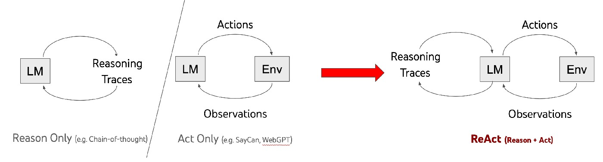
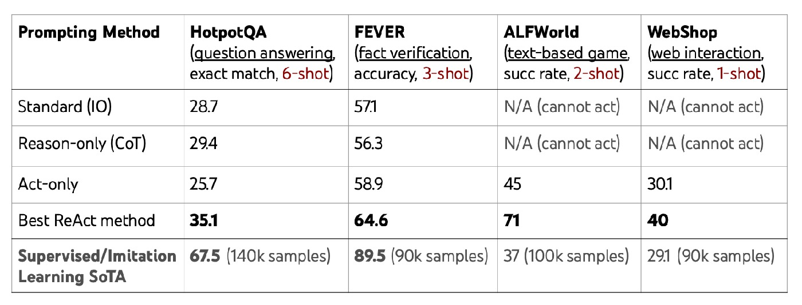
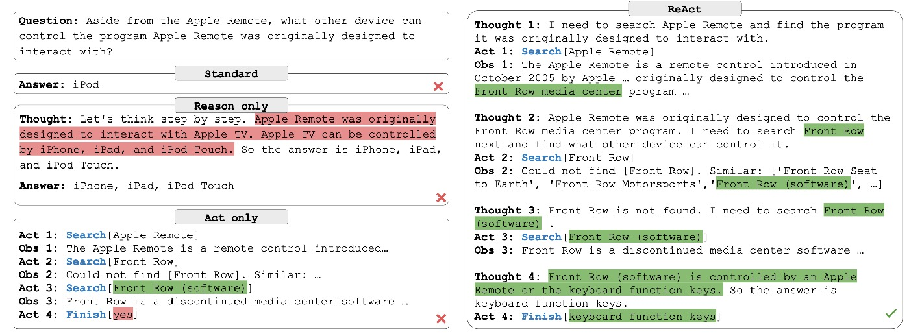
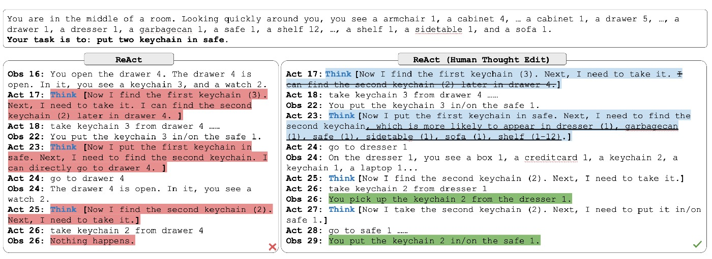
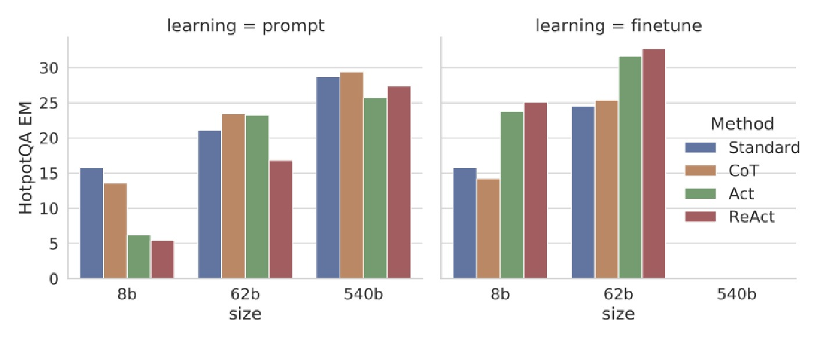

ReAct In-Depth Technical Review (English, v5)
Author: zhongzhu zhou
Paper: ReAct: Synergizing Reasoning and Acting in Language Models (ICLR 2023)
Abstract
ReAct’s contribution is not simply “longer reasoning traces.” Its key idea is to reframe LLM problem solving as an executable closed loop: Thought (reasoning) → Action (interaction) → Observation (feedback). This unifies reasoning and tool interaction in one trajectory, enabling planning before acting and correction after observing. As a result, ReAct improves robustness, interpretability, and diagnosability across both knowledge-intensive reasoning and long-horizon decision-making tasks. This review provides a detailed analysis of method mechanics, experiments, failure modes, and practical deployment guidance.
1. Prerequisites: What to know before reading ReAct
1.1 Chain-of-Thought (CoT)
CoT explicitly exposes intermediate reasoning steps. It often improves complex reasoning, but has two known risks: (1) ungrounded factual claims (hallucination), and (2) error propagation across long chains.
1.2 Tool use / function calling
Tool use grounds models in external information (search, browsing, APIs). It improves factual reliability, but without high-level reasoning, systems can still behave myopically: repetitive calls, poor planning, weak synthesis.
1.3 Agent evaluation paradigm
Endpoint metrics (accuracy/success rate) are insufficient for agents. Process metrics matter: step cost, repetition rate, ineffective tool-call rate, fallback rate, and evidence coverage. ReAct is valuable because it naturally exposes process trajectories.
1.4 Few-shot prompting
Few-shot prompting teaches both format and strategy from a small number of demonstrations. In ReAct, demonstrations encode not only answer style but also the interleaving protocol of Thought/Action/Observation, so example quality strongly affects generalization.
1.5 Task background: HotpotQA, FEVER, ALFWorld, WebShop
- HotpotQA: multi-hop QA requiring cross-passage evidence composition.
- FEVER: fact verification requiring evidence-grounded support/refute judgment.
- ALFWorld: long-horizon household task planning with sparse feedback.
- WebShop: noisy real-world product selection under instruction constraints.
2. Core Method: How ReAct unifies reasoning and acting
2.1 Formal perspective
Conventional policy:
π(a_t | c_t), with a_t ∈ A
ReAct expands the action space to:
 = A ∪ L
where A is executable environment actions and L is language-space reasoning actions (Thought). Thought does not directly modify the environment, but updates context c_t and therefore shifts subsequent action selection.
2.2 Trajectory syntax and information flow
Typical knowledge-task trajectory:
Question → Thought → Action → Observation → … → Finish
Typical decision-task trajectory:
Goal → Action/Observation … (sparse Thoughts at key nodes) → Finish
The design principle: dense reasoning for evidence-heavy tasks, sparse reasoning for long-horizon control.
2.3 Functional roles of Thought in ReAct
- Goal decomposition: break down complex objectives into executable subgoals.
- Evidence extraction: convert observations into decision-relevant facts.
- Query reformulation: recover from retrieval misses by rewriting search targets.
- Progress tracking: decide whether to continue, switch, or terminate subtasks.
- Final synthesis: aggregate multi-step evidence into final answers/actions.
3. Key figures and technical interpretation





4. Experiment deep-dive: why gains differ by task
4.1 HotpotQA / FEVER: Internal reasoning vs external grounding
Both tasks benefit from reasoning+retrieval, but in different proportions. FEVER is highly sensitive to factual grounding, while HotpotQA stresses compositional multi-hop structure. In practice, hybrid routing (CoT ↔ ReAct) often outperforms single-paradigm use.
4.2 ALFWorld: cognitive anchors in long-horizon control
Many long-horizon failures are not action-primitive failures but subgoal-management failures. Sparse thought at key nodes answers three control questions: where am I, what is done, what is next?
4.3 WebShop: constraint alignment over naive search
The central challenge is semantic alignment between user constraints and product attributes, not merely retrieval. ReAct externalizes those constraints in thought, improving consistency under noisy observations.
5. Failure modes and breakdown analysis
- Retrieval coupling failure: weak recall breaks the reasoning chain.
- Trajectory loops: repeated thought/action leads to local stagnation.
- Cost inflation: multi-turn trajectories increase token and latency budgets.
- Evaluation blind spot: endpoint-only metrics miss process quality differences.
A robust production setup should include: step budget, no-gain observation detection, loop detector, fallback routing, and evidence gating.
6. ReAct in the method lineage
Useful high-level lineage:
CoT → ReAct (closed loop) → Reflexion (reflection layer) / ToT (search layer) / Toolformer (tool-use learning layer) / Function-calling Agents (execution engineering layer)
ReAct provides the closed-loop backbone; Reflexion adds cross-episode learning; ToT expands branching search; Toolformer focuses on tool invocation learning; function-calling agents emphasize reliability, validation, and governance.
7. Deployment guidance
7.1 Strategy matrix
- Low-latency, mostly internal-knowledge tasks: CoT/CoT-SC first.
- Multi-step evidence acquisition, interactive environments: ReAct first.
- Heterogeneous workload, variable uncertainty: hybrid routing (CoT ↔ ReAct).
- High-risk domains: function-calling framework + ReAct-style reasoning + human approval gates.
7.2 Practical implementation checklist
- Thought length control to prevent verbosity inflation.
- Action budget with fallback triggers.
- Evidence binding: key conclusions must cite observations.
- Loop detection and replanning trigger.
- Online telemetry: ineffective actions, average steps, fallback rate, success rate.
8. Conclusion
ReAct’s long-term impact is architectural: it turns reasoning from a static text capability into a dynamic control capability. If CoT taught models to “think,” ReAct teaches systems to make thinking operational in action and continuously corrected by feedback.